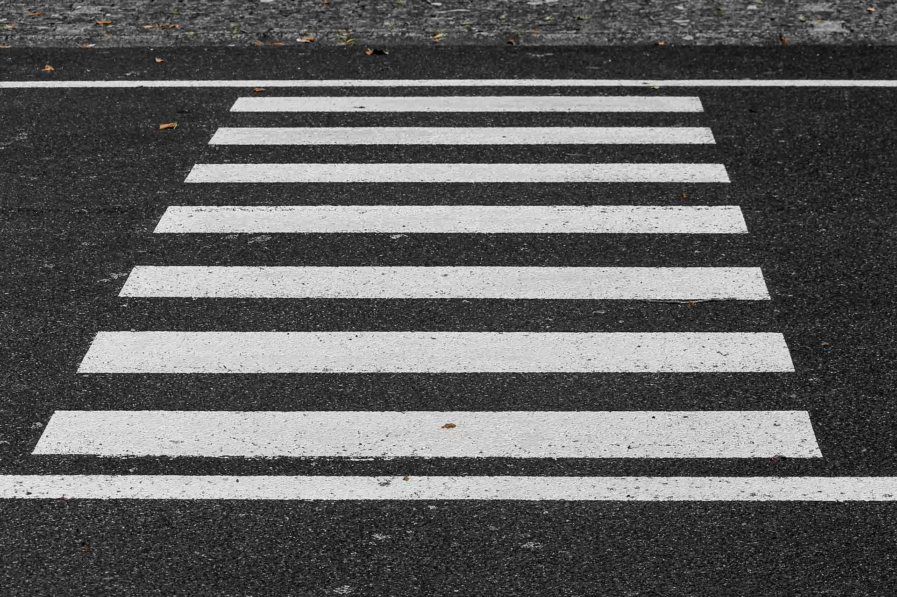
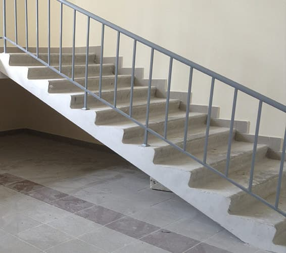

Ranní směna 5:55 - 14:00
Odpolední směna 13:55 - 22:00
Noční směna 21:55 - 6:00
Ranní směna 6:00 - 18:00
Noční směna 18:00 - 6:00
Snídaně - 10 минут
Úklid 5S - 5 минут
Oběd - 30 минут
Abnormalita: Jakákoliv odchylka výrobku, materiálu či zařízení od standardu. Hluk, pískání, vrzání, přehřívání, nadměrné vibrace atd. V případě zjištění abnormality je nutné se vždy řídit následujícími instrukcemi:
-
ZASTAVITpráci, případně zastavit stroj.
-
ZAVOLATsvého přímého nadřízeného a informovat ho o dané situaci.
-
POČKATna pokyny nadřízeného, který rozhodne o dalším postupu nebo na údržbáře, kterému je třeba předat informace potřebné k zahájení opravy.
-
KanbanSamoregulační systém průběžného zásobování pracoviště materiálem. Doprovodná materiálová karta obsahuje informace jako název, požadované množství, místo nakládky a vykládky, atd.
-
KaizenPostupné a neustálé zlepšování všech procesů za účasti všech kompetentních zaměstnanců.
-
TPMPreventivní údržba strojů za účasti všech zaměstnanců. Pomocí svého smyslového vnímání může člověk zjistit stav vybraných částí stroje a odhalit tak všechny odchylky od normálu.
-
TPM se zaměřuje na:
- Denní kontrolu
- Pravidelné čištění
- Mazání
-
AndonSvětelná nebo zvuková signalizace, která indikuje stav výrobního procesu na jednotlivých pracovištích linky. Slouží k hlášení problému (abnormality).
-
Systém 5SPravidelné, systematické udržování pořádku na pracovišti. Metoda, jak získat a udržet jakékoli pracoviště v organizačním pořádku a čistotě.
1 vytřid 2 USPOŘÁDEJ 3 uklid 4 STANDARDIZUJ 5 DODRŽUJ -
3STři kroky pro bezpečné vypnutí stroje:
- Vypnout hlavní vypínač
- Zkontrolovat, zda je vypínač opravdu vypnutý
- Zkontrolovat, zda se stroj opravdu zastavil
-
Poka-yokeOpatření znemožňující provedení chyby, existuje pouze jeden způsob montáže.
-
JidokaAutomatické zastavení operace (včetně upozornění operátora) v případě chyby,např.místo 5 šroubů jsou našroubovány jen 4.
-
1
Vykonávej pouze práci určenou přímým nadřízeným = TEAMLEADER (T/L, mistr) nebo SETTER (seřizovač), v jejich nepřítomnosti je to určený spolupracovník.
-
2
V případě abnormality dodržuj následující postup: 1 - zastav práci, 2 - zavolej nadřízeného, 3 - počkej na instrukce.
-
3
Opuštění pracoviště oznam svému nadřízenému, aby za tebe mohl zajistit náhradu.
-
4
Nedotýkej se otáčivých a pohybujících se částí stroje a nástrojů, např. šroubováků, dopravníků, výtahů.
-
5
Volně rozpuštěné vlasy nesmí být delší než na ramena, jinak je nutno je svázat — hrozí nebezpečí pracovního úrazu zachycením či reklamace. Nenos řetízky a prstýnky — BOZP
-
6
Na pracovišti není povoleno používat soukromý mobilní telefon a nosit sluchátka — používání telefonu je v rozporu s pracovním řádem a nošení sluchátek snižuje vnímání okolí a je v rozporu s BOZP.
-
7
Používej předepsané ochranné pomůcky a pracovní oděv včetně identifikační karty — pracovní oděv se skládá z kalhot, trika, blůzy a pracovní obuvi, na oděvu musí být čitelné logo firmy.
-
8
Uniformu a obuv měj řádně zapnutou a upravenou - z důvodu BOZP nesmí části oděvu volně viset.
-
9
Při práci se nerozptyluj a soustřeď se na její provedení.
-
10
Dodržuj zásady pořádku na pracovišti 5S – je nutno udržovat v čistotě i okolí pracoviště.
-
1
Na linkách a pracovních pozicích je zakázáno jíst z důvodu 5S, bezpečnosti a kvality. Jíme jen v kantýně a odpočinkové zóně.
-
2
Je zakázáno vstupovat na linku s otevřeným nápojem, povolen je pouze uzavřený nápoj (odkládá se na pracovišti do stojanu) — BOZP a 5S.
-
3
Každý, kdo se pohybuje v areálu DMCZ, musí viditelně nosit svoji identifikační kartu.
-
4
V letních obdobích (květen — srpen) je povoleno nosit ohrnuté nohavice nad kotníky — nikoliv pod kolena, z důvodu BOZP.
-
5
Elektronická cigareta se považuje za běžnou cigaretu, proto se nesmí kouřit nikde jinde než na kuřárnách !!!
-
6
Je zakázáno telefonovat při chůzi - BOZP.
Vstup do výrobní haly povolen pouze v plné obuvi.Vstup do výrobní zóny za žlutou čáru a do prostoru Logistiky povolen pouze v bezpečnostní obuvi.

Choďte po určených a vyznačených cestách. Před přechodem se rozhlédněte.
Při chůzi nepoužívejte mobilní telefon. Když potřebujete volat, zastavte se.
Nechoďte s rukama v kapsách a neběhejte.

Při chůzi po schodech se přidržujte zábradlí. Po schodech neběhejte a nechoďte přes dva schody.
směsný odpad obaly od jidla nápojové kelímky
pet lahve.

kancelářský, drobné papírové obaly

utěrky, textilie, rukavice znečištěné tuky, oleji, rozpouštědly, kzselinami,louhz, barvami nebo fluxem.